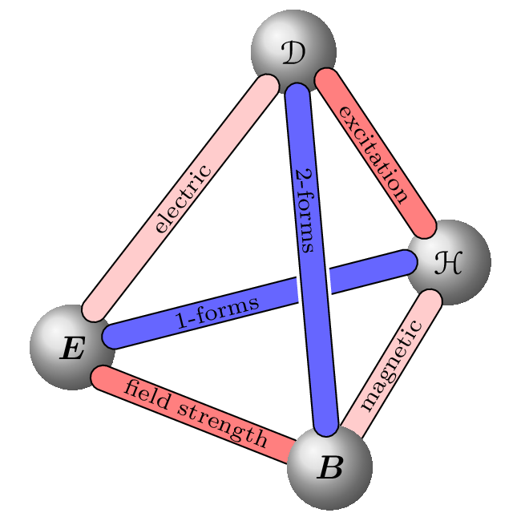

\documentclass{article}
\usepackage[paperwidth=55mm,paperheight=55mm,margin=1mm]{geometry}
\usepackage{bm}
\usepackage{eucal}
\usepackage{tikz}
\usetikzlibrary{calc}
\usetikzlibrary{decorations.markings}
\pagestyle{empty}
\parindent=0pt
\begin{document}
\pgfdeclarelayer{-1}
\pgfsetlayers{-1,main}
\tikzset{
zlevel/.style={%
execute at begin scope={\pgfonlayer{#1}},
execute at end scope={\endpgfonlayer}
},
}
\centering
\begin{tikzpicture}[
ball/.style={circle, shading=ball, ball color=black!15, minimum size=9mm},
conline/.style={line width=#1, line cap=round},
label/.style 2 args={
postaction={decorate,transform shape,decoration={
markings, mark=at position #1 with \node {\scriptsize\color{black}#2};
}}
},
blue/.style={color=blue!60},
red/.style={color=red!50},
redl/.style={color=red!20},
]
\def\conline<#1>[#2] (#3) (#4);{%
\draw[conline=#1, #2] (#3) -- (#4);
}
\def\conwhiline (#1) (#2);{%
\conline<10pt>[color=white] (#1) (#2);
}
\def\connectpos[#1] (#2) (#3) #4 #5;{%
\conline<8pt>[color=black] (#2) (#3);
\conline<7pt>[#1, label={#4}{#5}] (#2) (#3);
}
\def\connection[#1] (#2) (#3) #4;{%
\connectpos[#1] (#2) (#3) 0.5 {#4};
}
\node (B) [ball] {$\bm{B}$};
\node (D) [ball] at ($(B)+(95:4.4)$) {$\mathcal{D}$};
\begin{scope}[zlevel=-1]
\node (H) [ball] at ($(B)+(60:2.5)$) {$\mathcal{H}$};
\node (E) [ball] at ($(B)+(155:3)$) {$\bm{E}$};
\connectpos[blue] (E) (H.180) 0.35 {1-forms};
\conwhiline (B) (D);
\connection[red] (E.-45) (B) {field strength};
\connection[redl] (B) (H.-115) {magnetic};
\end{scope}
\connection[red] (D.-40) (H) {excitation};
\connectpos[blue] (D) (B) 0.35 {2-forms};
\connection[redl] (E.60) (D) {electric};
\end{tikzpicture}
\end{document}Created by David Li